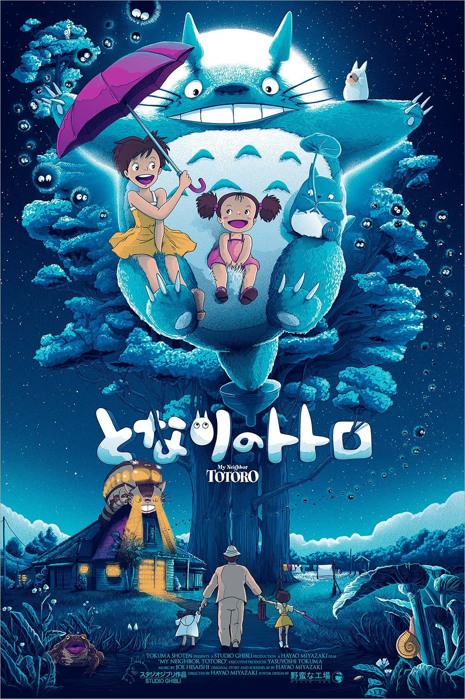
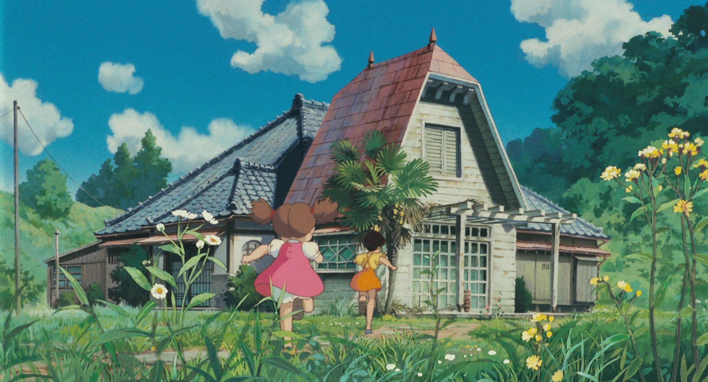
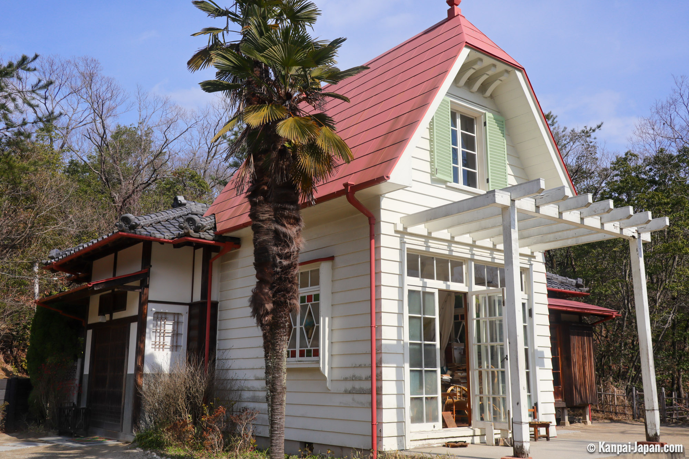

Ghibli Studio
My Neighbor Totoro: Japan



The tototro forest: Sayama Hills, Saitama Prefecture
Totoro foreest is just north-west of Tokyo.
Spirited Away: Japan
The bathhouse: Dogo Onsen, Ehime Prefecture
Shikoku is the smallest of Japan’s main four islands, and thus often forgotten. The region is known to move a bit of a slower pace than the rest of Japan, having great farm land and more traditional values.
The baths inside are gendered, and can get quite busy as this is a popular location. Outside the main building various salesmen compete for customers, selling tickets that allow access to the building. You can pay for just the tour, a basic bath, or a more luxurious bath.